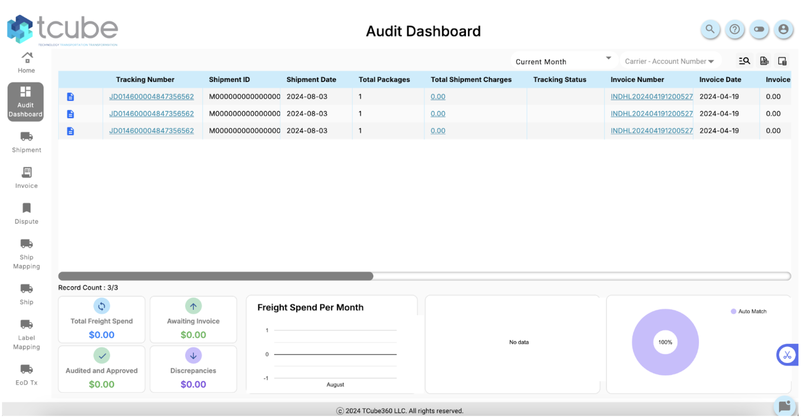
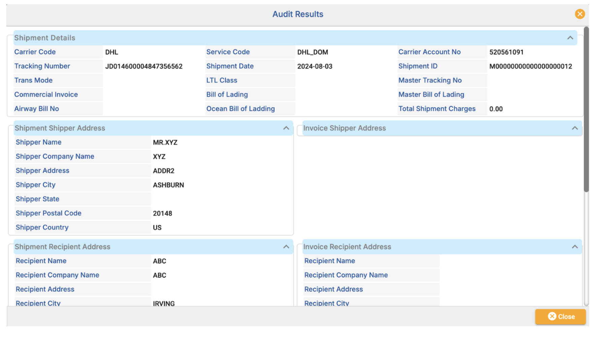
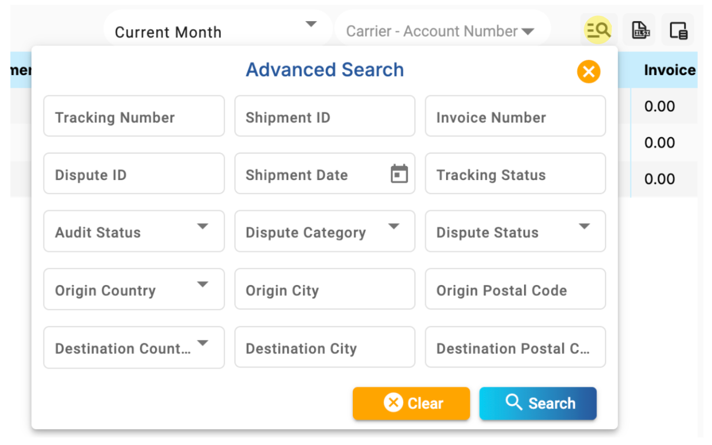

Audit Cube - Main Dashboard
Table Overview
The Audit Cube’s Main Dashboard is the central hub where users can view, analyze, and manage shipment, invoice, and dispute data. This dashboard provides a comprehensive view of the audit process through various tools, such as tables, charts, and visualization tools that summarize data and assist in decision-making.
Audit Results
Located on the far left of the table, the blue paper icon takes users to the detailed audit results page for each shipment. This page provides a comprehensive breakdown of the shipment details, including shipper and recipient addresses, service codes, and other relevant data.
Advanced Search
The search icon allows users to perform advanced searches across various parameters such as Tracking Number, Shipment ID, Invoice Number, Dispute ID, Shipment Date, and more. This feature enables users to quickly find specific records or filter the table to display only relevant data.
Visualization Tools & Insights
Freight Spend Per Month:
A chart that summarizes the freight spend for the selected period, providing insights into monthly trends. Users can view their total freight spend and compare it across different months.
Audit Status Summary:
Displays the status of invoices and shipments, showing the percentage of packages that have been audited and approved, are awaiting invoice, or have discrepancies. This visualization helps users quickly identify areas that need attention.
Auto Match Status:
A doughnut chart that indicates the percentage of records that have been automatically matched, providing a quick overview of the audit accuracy and reducing manual workload.
Troubleshooting
Data Not Loading Properly:
Issue: If the data within the dashboard fails to load, this might be due to a slow network connection or a temporary issue with the platform.
Solution:
- Refresh the Page: Start by refreshing the page to see if the data loads correctly.
- Check Network Connection: Ensure that your internet connection is stable.
- Clear Browser Cache: Sometimes, cached data may cause loading issues. Clearing your browser’s cache can help resolve this.
- Contact Support: If the issue persists after trying these steps, it’s advisable to contact the technical support team for further assistance.
Advanced Search Not Returning Expected Results:
Issue: When using the Advanced Search feature, you may not get the results you expected, which could be due to incorrect search parameters or filters.
Solution:
- Double-Check Parameters: Make sure that all search parameters (like Tracking Number, Shipment ID, Invoice Number, etc.) are correctly entered. A single incorrect digit or letter can lead to no results or incorrect data.
- Clear Filters: If you have multiple filters applied, try clearing them to ensure they are not conflicting with each other. You can start fresh by reapplying filters one at a time to narrow down your search accurately.
- Broaden Search Criteria: If your search is too narrow (e.g., specifying a very short date range or exact match), try broadening the criteria to ensure you capture the relevant data.
Export Issues (Excel Export Not Working):
Issue: If you’re unable to export the table data to Excel, it might be due to browser settings or a temporary issue with the platform.
Solution:
- Try a Different Browser: Sometimes, certain browsers may block pop-ups or downloads. Trying another browser might resolve this issue.
- Check Pop-up Blockers: Ensure that your browser’s pop-up blocker isn’t preventing the download. Allow pop-ups for the Audit Cube platform if necessary.
- Check File Size Limits: Large datasets might cause export issues. If possible, try exporting smaller subsets of data to see if that resolves the issue.